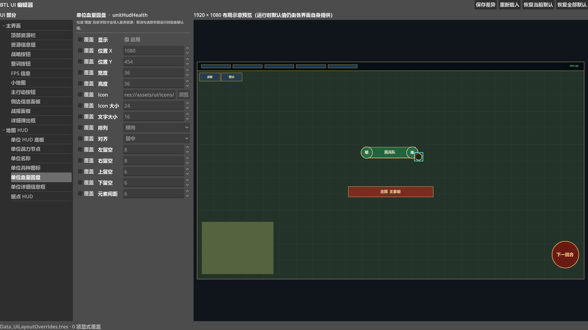

一处看全局，一处只写差异
在 Godot 顶部主屏切换到“BTL UI”。左栏选择界面元素，中栏勾选并修改字段，右栏观察 16:9 布局示意；底部状态会显示未保存标记与显式覆盖数量。

权威数据边界
工具只写 Data_UiLayoutOverrides.tres。运行时默认布局仍由各界面自身提供；编辑器不会复制一套默认值，也不会把示意预览变成新的运行时来源。
18 个元素覆盖主界面与地图 HUD
主界面 · 10 项
顶部资源栏、资源信息组、战略按钮、整训按钮、FPS 信息、小地图、主行动按钮、侧边信息面板、战报面板、详细弹出框。
地图 HUD · 8 项
单位 HUD 底板、单位战力节点、单位名称、单位兵种图标、单位血量圆盘、单位详细信息框、据点 HUD、设施 HUD。
元素树按“主界面 / 地图 HUD”分组。选中元素只会切换当前属性面板，不会自动产生覆盖；这使策划可以安全浏览所有默认布局。
每个字段都独立选择是否接管
| 字段组 | 可编辑内容 | 适用问题 |
|---|---|---|
| 显示与几何 | 显示、位置 X/Y、宽度、高度 | 隐藏模块、移动位置、扩大点击区或容器。 |
| 图标与文字 | Icon 路径、Icon 大小、文字大小 | 替换正式图标，统一信息层级与远景可读性。 |
| 布局规则 | 横向、纵向、横/纵流式、叠放；起点、居中、终点、撑满 | 改变子元素排列和容器对齐。 |
| 间距 | 四向留空、元素间距 | 解决边缘拥挤、文字贴边和控件碰撞。 |
opt-in 是数据安全机制
只有勾选“覆盖”的字段才进入差异资源。取消勾选会删除对应键并恢复运行时默认；不要为了“看起来完整”把所有字段都勾上，否则未来默认布局升级将被旧覆盖挡住。
从一个布局问题到可回退的改动
- 先描述问题记录分辨率、界面状态和发生裁切或遮挡的元素，避免只凭感觉挪动。
- 选择元素从左栏定位目标；先观察右侧示意和当前值，不勾选就不会写数据。
- 只接管必要字段勾选“覆盖”后再改值。例如只需下移小地图，就只覆盖 Y，不必接管宽高与其他样式。
- 检查示意预览确认目标没有明显越过 1920 × 1080 安全边界，也没有与其他标记重叠。
- 保存差异点击“保存差异”写入
Data_UiLayoutOverrides.tres；状态栏未保存标记应消失。 - 启动游戏实机验证在 1920 × 1080 检查真实字体、容器、弹窗、HUD 与交互，再补测缩窄窗口。
四个恢复动作不要混用
重新载入
放弃当前未保存内容，并重新读取磁盘中的差异资源。
恢复当前默认
删除所选 UI 元素的全部显式覆盖；还要点击保存才会落盘。
恢复全部默认
清空全部 UI 覆盖；适合整体回退，执行前先确认没有仍需保留的调优。
保存差异
只把当前显式覆盖写盘，并触发编辑器资源扫描；不会改动默认表。
示意预览不是像素级 WYSIWYG
右侧固定按 1920 × 1080 设计坐标绘制地图底色、元素矩形与标签，适合快速看位置、范围和相互关系；它不运行真实界面树。
| 预览能回答 | 预览不能保证 |
|---|---|
| 元素是否大致在正确象限、是否越界、多个面板是否重叠。 | 真实字体栅格化、长文案换行、图标透明边距和主题 StyleBox 的最终像素。 |
| 显式覆盖后矩形、可见性与排列方向的变化。 | 运行时容器最小尺寸、弹窗状态、输入焦点、鼠标命中和不同窗口比例。 |
正确使用方式
把示意图当作“布局草图与碰撞预警”，把 1920 × 1080 游戏实机当作最终验收。两者不一致时，以运行时为准，并回到编辑器缩小覆盖范围或修正数值。
保存后必须做一次真实界面走查
- 差异文件只包含本次主动勾选的字段。
- 取消覆盖后对应键确实被删除。
- 1920 × 1080 下无文字裁切、元素越界和弹窗遮挡。
- 顶部资源栏、小地图、主行动按钮均可读可点。
- 单位名称、战力、兵种图标和血量没有互相覆盖。
- 侧边面板、战报、详情框打开后仍在安全区内。
- 缩窄窗口时容器没有因固定尺寸产生严重溢出。
- 重新进入项目后覆盖仍能正确载入。
遇到异常时
先用“重新载入”排除未保存试验；再取消单个字段覆盖定位问题。只有确认整组覆盖都不再需要时，才使用“恢复当前默认”或“恢复全部默认”。